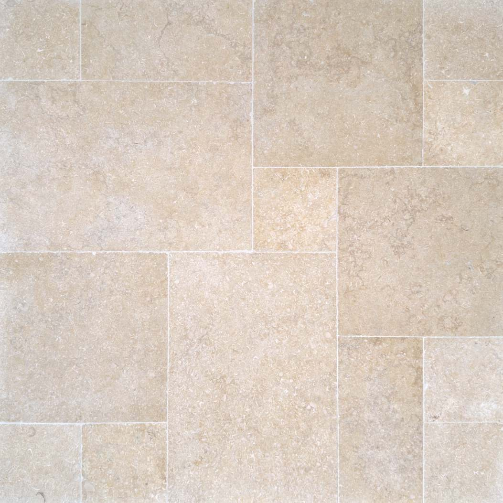

Formatai ir klojimo schemosFormats & laying patterns
Didelės plokštės. Mažiau siūlių.Large slabs. Fewer joints.
Pagrindiniai formatai sandėlyje: 900×600, 850×600, 800×600, 750×600, 700×600, 650×600 ir 600×600 mm, storis nuo 13 mm, gludinta apdaila. Įvairaus ilgio plokštės leidžia kloti laisvu, prancūzišku ritmu – grindys atrodo kaip vientisas akmens kilimas.
Main formats in stock: 900×600, 850×600, 800×600, 750×600, 700×600, 650×600 and 600×600 mm, from 13 mm thick, honed finish. Mixed lengths let us lay a free, French-style rhythm – the floor reads as one continuous carpet of stone.
Dvi klojimo schemos: Regular – vienodo formato plokštės ramiam, tvarkingam vaizdui; Opus – skirtingų ilgių plokštės, suteikiančios grindims natūralaus judėjimo be pasikartojančio rašto. Taip pat turime Opus French mozaikos komplektų – teiraukitės.
Two laying patterns: Regular – one format for a calm, orderly look; Opus – mixed lengths that give the floor natural movement with no repeating pattern. Opus French mosaic sets also available – ask us.
Kainos 63–109 €/m² su PVM: Seashell pigesnis, Highland Grey – brangesnis. Architektams, dizaineriams ir rangovams – 5–15 % nuolaida.Prices €63–109/m² incl. VAT: Seashell is the more affordable, Highland Grey the premium. Architects, designers and contractors get 5–15 % off.
